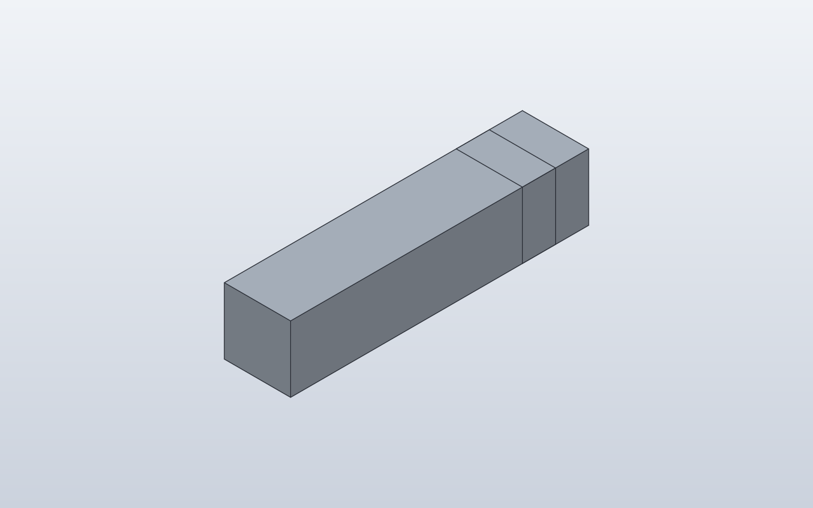

Forge qualification case · PASS · Q1 Q2 Q3 Q4 Q6 · Q5 N/R
Named oriented AnchorFrame
Verify that a reusable component can publish a named attachment datum with both position and orientation.

1. Forge contract
Public API
anchors() -> {'tip': AnchorFrame(origin=..., z=..., x=...)}; attach(parent='tip', child='mount')
Internal Forge model
AnchorFrame is explicitly a local frame: origin plus Z axis and X axis. It is not merely a named point.
SolidCraft lowering
For the rotated parent occurrence Forge materializes/uses the native joint-origin path so SolidCraft owns the occurrence rotation.
2. Native verification
Expected result
After the arm rotates 90 degrees about Z, the marker remains attached to the rotated tip with the authored frame orientation.
Parametric mutation
No parameter mutation; this fixture isolates occurrence rotation plus named-frame attachment.
Evidence

3. Results
Baseline · 2 bodies · measurements.json
No editable parameters in this result.
Bodies
| Body | BBox min | BBox max |
|---|---|---|
| Arm | [-5, -20, 0] | [5, 20, 10] |
| Marker | [-5, 15, 0] | [5, 25, 10] |
4. Generated native relationship/command path
[
{
"command": "joint.origin",
"params": {
"name": "Arm:1.tip",
"occurrence": "Arm:1",
"frame": {
"origin": [
20.0,
0.0,
5.0
],
"z": [
1.0,
0.0,
0.0
],
"x": [
0.0,
0.0,
1.0
]
}
}
},
{
"command": "joint.create",
"params": {
"type": "rigid",
"name": "Attach Marker:1 to Arm:1",
"a": "Arm:1.tip",
"b": {
"occurrence": "Marker:1",
"point": [
20.0,
0.0,
5.0
],
"z": [
-1.0,
0.0,
0.0
],
"x": [
0.0,
0.0,
1.0
]
}
}
}
]5. Reference models
These comparisons clarify concepts; Forge does not promise API compatibility with them.
- BOSL2: Closest conceptual match: an anchor defines position, local Z direction and spin/orientation information.
6. Fixture source
class Arm:
def anchors(self):
return {
"tip": AnchorFrame(
origin=(20, 0, 5),
z=(1, 0, 0),
x=(0, 0, 1),
),
}
def build(self):
return Box(40, 10, 10)
class Marker:
def anchors(self):
return {
"mount": AnchorFrame(
origin=(0, 0, 5),
z=(-1, 0, 0),
x=(0, 0, 1),
),
}
def build(self):
return Box(10, 10, 10)
class CustomAnchor:
def build(self):
arm = Arm().rotate(Axis.Z, 90)
marker = Marker().attach(
arm,
parent="tip",
child="mount",
)
return arm + marker
CustomAnchor()